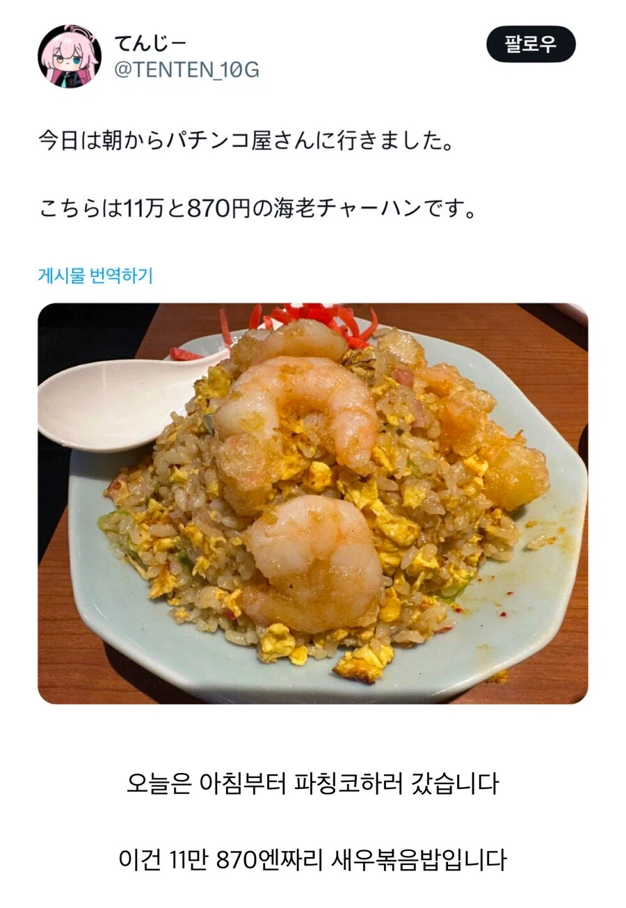

아 ㅋㅋ

아 ㅋㅋ
숟가락보면 아무래도 새우거 큰게아닐까
쌀이 저렇게 작을리 없잖아
씹은 다음에 뱉어서 모으면 가능
ㅋㅋㅋ 카지노 갔다와서 하는말이랑 비슷하네.. 나도 종종 친구랑 50만원짜리 짜장면 먹고 올때 있는데.
종종? 그만가라
끊어..좆돼 오히려 따면 더 좆되는거야
난 주차 잘못해서 4만원짜리 김밥먹었었지
난 국장에서 버틴 죄로 제육덮밥을 자그마치... 크윽.. ㅠㅠ
일본 볶음밥 차원이 달라
870엔짜리 볶음밥이라고? 맛있어보이는데
새우존나크네
맛있긴하겠다 새우도 쥰내크네
별로 안 잃었네
난 며칠간 일만 했는데도 더 많이 잃었어
그래도 맛있어보이네
일본물가가 싸긴하네
새우가 큰건가 그릇과 밥이 작은건가 헷갈리네